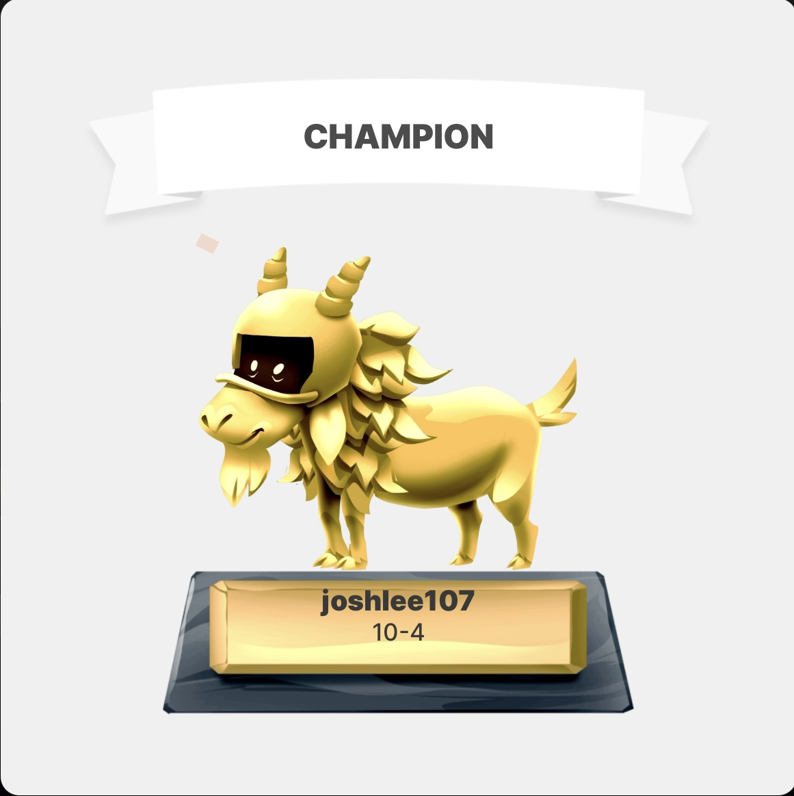

My name is Joshua Lee! I am a fresh graduate of Computer Science and Mathematics at Santa Clara University. I am currently studying in the Masters in Artificial Intelligence program at SCU. I am fluent in Java, Python, C, C++, HTML, Javascript, CSS, Swift, Flutter, and SQL. I have built projects utilizing artificial intelligence to handle automated tasks. I have used Python to build custom neural networks to find correlations and patterns in data. I also have vast experience coding web apps in both Javascript and Flutter and IOS mobile apps.

Outside of programming, I enjoy watching sports such as football and basketball! My favorite teams are the San Francisco 49ers, Las Vegas Raiders, and the Golden State Warriors! Essentially, the bay area sports teams. I have been doing fantasy football for the past two years and just won my league this year! It took a lot of time and some luck, but was really fun! I also enjoy playing video games and reading historical biographies.
I am looking to improve my programming skills with hands-on experience by working in real working conditions with other people. I want to prepare for the real world by working on projects from the tech industry.